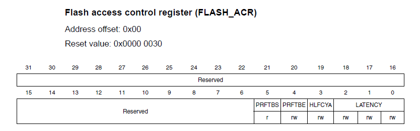

Вот уже несколько лет все свои проекты для линейки микроконтроллеров stm32 я делаю на C++.
За это время у меня накопилось некоторое количество материала, который может быть интересен другим разработчикам.
Во избежание лишних вопросов: я использую связку QtCreator+gcc+gdb+openocd. Как с ней работать, описано многократно, поэтому не буду на этом останавливаться, а вот о своих подходах к работе с микроконтроллерами расскажу подробнее.
На нижнем уровне проекта, как правило, находятся драйвера периферии. С них и начнём.
Я стараюсь, по возможности, не связываться с монстрами вроде SPL, HAL и, прости господи, CubeMX, разве что допиливая за деньги чужие проекты. Сама идеология фреймворка "как для больших машин", на мой взгляд, там порочна. Задуманные гибкими и удобными в использовании (хотя кто-то и поспорит с этим) функции превращаются в достаточно большой и неоптимальный машинный код, где многие лишние операции выполняются на микроконтроллере в рантайме. Да, современные контроллеры мощны, но компьютер, на котором мы собираем проект гораздо мощнее, поэтому пусть он всё и делает.
Я определил для себя основные требования к реализации управления периферией:
Наверное, только ленивый не придумывал свой велосипед для работы с полями регистров. Это и сдвиг плюс логические операции а-ля CMSIS, и всяческие макросы, скрывающие эти же операции в своих запутанных недрах и хтонь в стиле библиотек от ST. Одно время я даже работал через битовые поля, пока, наконец, не придумал решение, с которым и хочу ознакомить вас.
Здесь и далее в качестве примера буду использовать так любимый китайцами STM32f103 и его Flash access control register, который там один, поэтому пример будет простым и коротким.

Сконфигурируем flash средствами CMSIS для работы ядра на 72МГц:
FLASH->ACR = (FLASH->ACR &
(~(FLASH_ACR_LATENCY_Msk
| FLASH_ACR_PRFTBE_Msk ))) // Плохо читаемое обнуление полей
| FLASH_ACR_LATENCY_1 // Сразу не скажешь, сколько это и чего
| FLASH_ACR_PRFTBE;
Не очень наглядно, не находите? Если через пару недель понадобится изменить код, придётся лезть в даташит и по-новому разбираться, где, что и как. Или писать везде подробные комментарии. Тем не менее, плюсом данного подхода является то, что сгенерированный машинный код очень компактный:
0x80001ec 04 4a ldr r2, [pc, #16] ; (0x8000200 <main()+20>)
0x80001ee <+ 2> 13 68 ldr r3, [r2, #0]
0x80001f0 <+ 4> 23 f0 17 03 bic.w r3, r3, #23
0x80001f4 <+ 8> 43 f0 12 03 orr.w r3, r3, #18
0x80001f8 <+ 12> 13 60 str r3, [r2, #0]
Как видим, всё по классике: чтение-модификация-запись. Можно ли получить такой код из более понятного программного текста?
Можно. В этом нам помогут шаблоны и метапрограммирование.
Прежде всего, необходимо сделать описание периферии. В моей концепции набор регистров каждого периферийного устройства представляет собой структуру. Для flash с его одним регистром это будет выглядеть так:
struct Regs {
uint32_t ACR;
// Здесь могли бы быть ещё регистры
};
Для описания полей регистра используется следующее:
struct ACR {
constexpr static uint8_t LATENCY[]{ 0, 3 };
constexpr static uint8_t HLFCYA[]{ 3, 1 };
constexpr static uint8_t PRFTBE[]{ 4, 1 };
constexpr static uint8_t PRFTBS[]{ 5, 1 };
};
Здесь первое число в каждом массиве — это смещение поля, а второе — его длина. Для автоматического получения подобных структур на Python на коленке был написан парсер SVD файлов.
Для чтения и записи необходимо иметь адрес, по которому находится нужный регистр. Для этого используется constexpr выражение и функция:
constexpr static uint32_t base = 0x40022000; // Базовый адрес периферийного устройства
INLINE constexpr static volatile Regs* rg()
{
return reinterpret_cast<volatile Regs*>(base);
}
Здесь base задаётся отдельным выражением, потому что в некоторых случаях (если, например, у нас несколько одинаковых устройств, например, таймеров) оно может быть и параметром шаблона. Об этом я расскажу в других статьях.
Макрос INLINE определён как
#ifndef INLINE
#define INLINE __attribute__((__always_inline__)) inline
#endif
Это как раз тот случай, когда макрос оправдан. Запись становится более короткой, а в дальнейшем, при использовании компилятора отличного от gcc его можно будет условно переопределить.
Функция конфигурирования flash выглядит следующим образом:
INLINE static void setLatency(Flash::Latency latency, bool prefetchBufferEnable = false)
{
setRegister(rg()->ACR,
ACR::LATENCY, static_cast<uint8_t>(latency),
ACR::PRFTBE, prefetchBufferEnable
);
}
На мой взгляд, всё достаточно удобочитаемо: как сам интерфейс функции, так и её код. Входное значение latency жёстко типизировано, попытка записать туда произвольное число приведёт к ошибке. Приведение типа static_cast<uint8_t>(latency) обязательно, иначе компилятор будет ругаться, несмотря на то, что Latency объявлено как:
enum class Latency : uint8_t {
zeroWaitState = 0b000,
oneWaitState = 0b001,
twoWaitStates = 0b010
};
Вызов функции вида
Flash::setLatency(Flash::Latency::twoWaitStates, true);
компилируется в следующий машинный код:
0x80001ec 04 4a ldr r2, [pc, #16] ; (0x8000200 <main()+20>)
0x80001ee <+ 2> 13 68 ldr r3, [r2, #0]
0x80001f0 <+ 4> 23 f0 17 03 bic.w r3, r3, #23
0x80001f4 <+ 8> 43 f0 12 03 orr.w r3, r3, #18
0x80001f8 <+ 12> 13 60 str r3, [r2, #0]
Попробуйте найти отличие от реализации на CMSIS: всё происходит за один цикл чтения-модификации-записи, причём все константы вычисляются на этапе компиляции.
Какими средствами это достигается? Добро пожаловать под капот функции setRegister. Выглядит она следующим образом:
template<typename T, typename V, typename... Args>
INLINE constexpr static void setRegister(volatile uint32_t& reg,
const T field,
const V value,
const Args... args)
{
uint32_t mask = setMaskR(field, value, args...);
uint32_t val = setBitsR(field, value, args...);
reg = (reg & (~mask)) | val;
}
Ей передаётся ссылка на регистр (число uint32_t) и произвольное количество пар поле — значение. Далее при помощи вспомогательных функций конструируется маска для обнуления полей и число для записи в них.
Вспомогательные функции имеют вид:
template<typename V, typename T>
INLINE constexpr static uint32_t setBitsR(T field, V val)
{
return (val << (field[0]));
}
template<typename V, typename T, typename... Args>
INLINE constexpr static uint32_t setBitsR(T field, V val, Args... args)
{
return (val << (field[0])) | setBitsR(args...);
}
template<typename V, typename T>
INLINE constexpr static uint32_t setMaskR(T field, V val)
{
return ((((1 << field[1]) - 1) << field[0]));
}
template<typename V, typename T, typename... Args>
INLINE constexpr static uint32_t setMaskR(T field, V val, Args... args)
{
return ((((1 << field[1]) - 1) << field[0])) | setMaskR(args...);
}
Эти функции при компиляции рекурсивно "собирают" маску и значение из отдельных полей. "Шаблонная магия" уже многократно была описана во многих источниках, поэтому, если вы не знаете, как это работает, почитайте о ней, например, у того же Александреску.
Зачем используются вспомогательные функции и почему сразу не написать рекурсивную функцию setRegister? Я сначала так и сделал и получил очень неприятный эффект. Предположим, нам нужно подёргать туда-сюда какой-то бит — типичная задача при программировании микроконтроллеров. Однако, компилятор умный, он видит, что мы последовательно меняем одно и то же значение, и как бы мы его не отмечали как volatile, он оставляет только операцию, выполняющую последнюю модификацию. К сожалению, код такой реализации у меня не сохранился, поэтому прошу поверить мне на слово или попробовать проверить это самостоятельно.
В моей текущей реализации этот эффект отсутствует. В этом можно убедиться:
Flash::setLatency(Flash::Latency::twoWaitStates, true);
Flash::setLatency(Flash::Latency::oneWaitState, true);
компилируется в два цикла чтение-модификация-запись:
0x80001ec 07 4a ldr r2, [pc, #28] ; (0x800020c <main()+32>)
0x80001ee <+ 2> 13 68 ldr r3, [r2, #0]
0x80001f0 <+ 4> 23 f0 17 03 bic.w r3, r3, #23
0x80001f4 <+ 8> 43 f0 12 03 orr.w r3, r3, #18
0x80001f8 <+ 12> 13 60 str r3, [r2, #0] ; пишем раз
0x80001fa <+ 14> 13 68 ldr r3, [r2, #0]
0x80001fc <+ 16> 23 f0 17 03 bic.w r3, r3, #23
0x8000200 <+ 20> 43 f0 11 03 orr.w r3, r3, #17
0x8000204 <+ 24> 13 60 str r3, [r2, #0] ; пишем два
Функция чтения поля регистра достаточно тривиальна:
template<typename T>
INLINE constexpr static uint32_t getRegField(volatile uint32_t& reg,
const T field)
{
uint32_t mask = (((1 << field[1]) - 1) << field[0]);
return ((reg & mask) >> field[0]);
}
За один вызов функции считывается одно поле регистра.
Ниже — реализованная при её помощи сервисная функция:
INLINE static bool getLatencyPrefetch()
{
return getRegField(rg()->ACR,
ACR::LATENCY,
ACR::PRFTBE);
}
Полностью класс для управления flash будет выглядеть следующим образом:
struct Flash {
constexpr static uint32_t base = 0x40022000; //< Базовый адрес периферии
struct ACR {
constexpr static uint8_t LATENCY[]{ 0, 3 };
constexpr static uint8_t HLFCYA[]{ 3, 1 };
constexpr static uint8_t PRFTBE[]{ 4, 1 };
constexpr static uint8_t PRFTBS[]{ 5, 1 };
};
enum class Latency : uint8_t {
zeroWaitState = 0b000,
oneWaitState = 0b001,
twoWaitStates = 0b010
};
INLINE constexpr static volatile Regs* rg()
{
return reinterpret_cast<volatile Regs*>(base);
}
INLINE static void setLatency(Flash::Latency latency, bool prefetchBufferEnable = false)
{
Utility::setRegister(rg()->ACR,
ACR::LATENCY, static_cast<uint8_t>(latency),
ACR::PRFTBE, prefetchBufferEnable
);
}
INLINE static bool getLatencyPrefetch()
{
return getRegField(rg()->ACR,
ACR::LATENCY,
ACR::PRFTBE);
}
};
Работа с периферией извне осуществляется только через вызов методов классов. Можно было бы совсем закрыть всё лишнее, однако, исключительно для целей отладки иногда бывает полезно обратиться к полям класса напрямую. Поэтому всё определяется сознательностью разработчика.
Для работы с регистрами портов ввода-вывода я использую иной механизм, о нём будет в следующей статье.
Надеюсь, приведённая информация была вам полезна. В планах также рассказать о о реализации маленького лёгкого потока вывода в консоль, принципах построения шаблонов для работы со сторонней периферией и некоторых простых DSP-алгоритмах.